从饮食管理到紧急干预，从个性化推荐到智能评测，
打造最懂孕妈的 AI 健康助手
覆盖孕期全场景的智能服务能力，从营养管理到紧急就医一站式解决
根据孕周、BMI、孕吐情况等个性化生成每日营养方案。AI 医生角色提供专业饮食指导， 包括进食顺序建议、营养计划开通引导，以及每日定制食谱（含早/午/晚餐及加餐方案）， 精确到食材用量与烹饪方式。
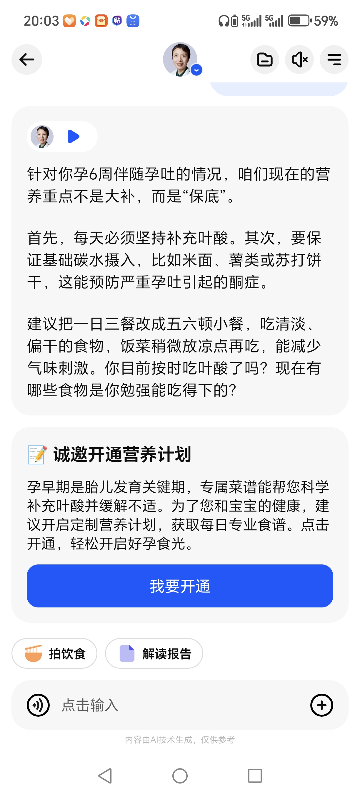
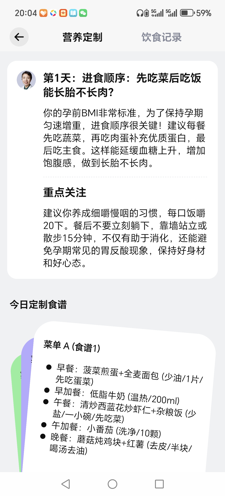
用户拍照或上传孕期检查报告（如 B 超单），AI 自动识别并以通俗易懂的语言解读检查结果， 判断胎儿发育情况，给出专业健康建议。支持隐私保护处理，让孕妈安心使用。
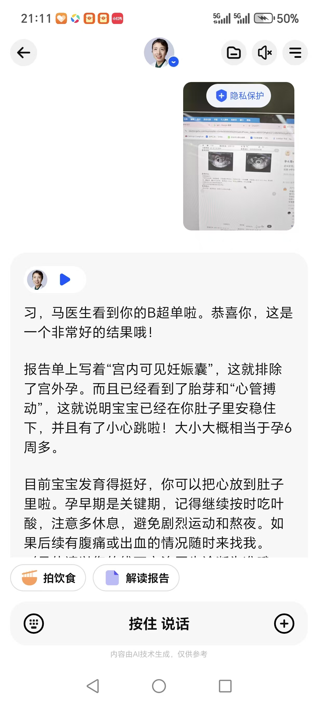
当孕妈描述异常症状（如腹痛、出血）时，AI 实时评估风险等级，高危情况立即触发紧急干预流程： 建议立刻就医，并自动生成「就医小抄」——包含基本情况、核心症状、伴随症状、既往病史等关键信息， 帮助孕妈在紧张时刻也能高效与医生沟通。
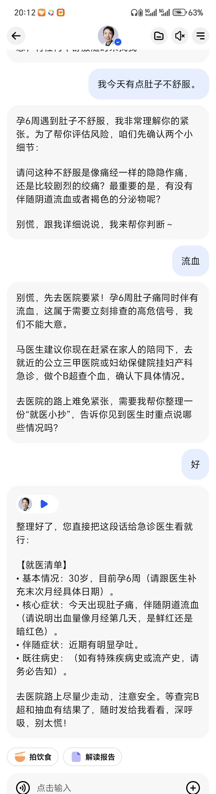
基于对话中提取的专业筛选标准（如「柠檬酸钙 + 维生素 D3 + 分次吸收」）， AI 医生将标准同步给推荐助手「点点」，从商品库中智能匹配最契合的产品， 并从「专业对齐」和「场景匹配」两个维度给出推荐理由，实现从健康咨询到精准消费的闭环。
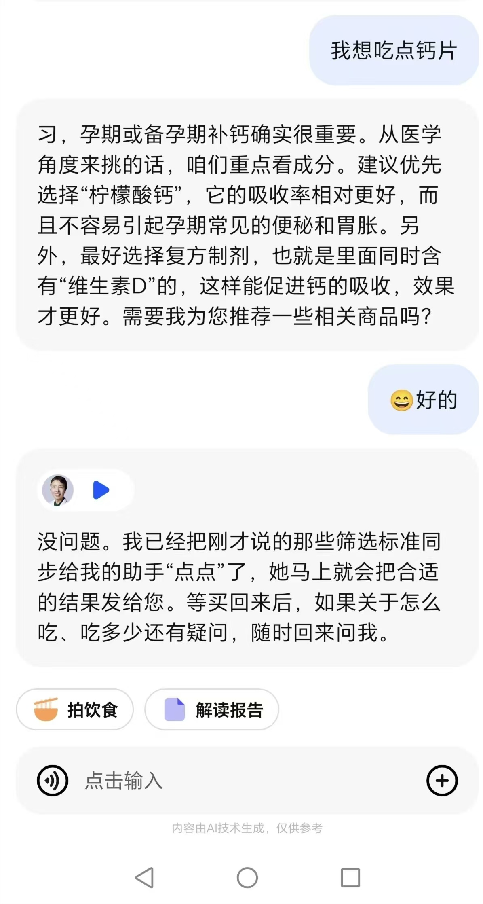
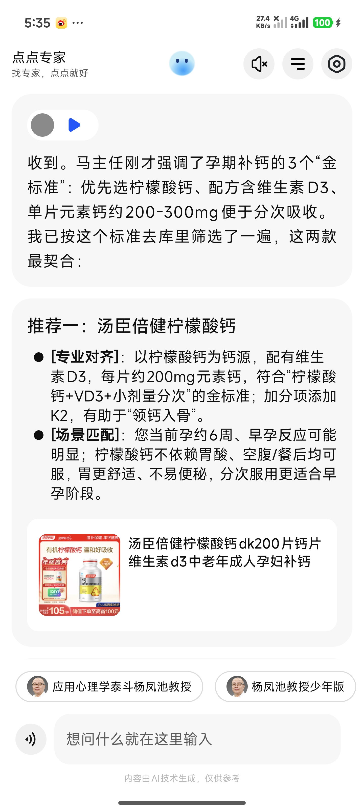
从「答案评测」走向「轨迹评测」，构建 Agent 时代的系统体检与持续监护体系
传统评测 = 期末考试，Agent 评测 = 定期系统体检 + 路径审查 + 长期监护。 涵盖评测对象、空间、指标、方法、节奏、组织方法论六大维度的变化， 并构建从「定场景 → 定理想 → 定评估链路 → 定评判标准 → 接入自动化 → 持续回归」的完整闭环。
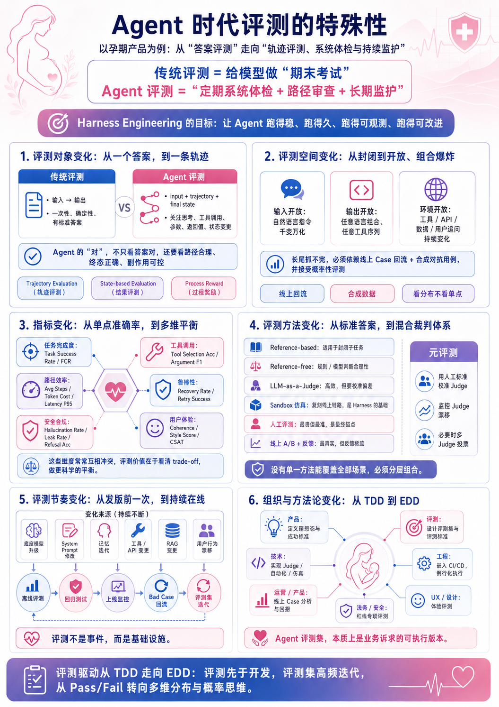
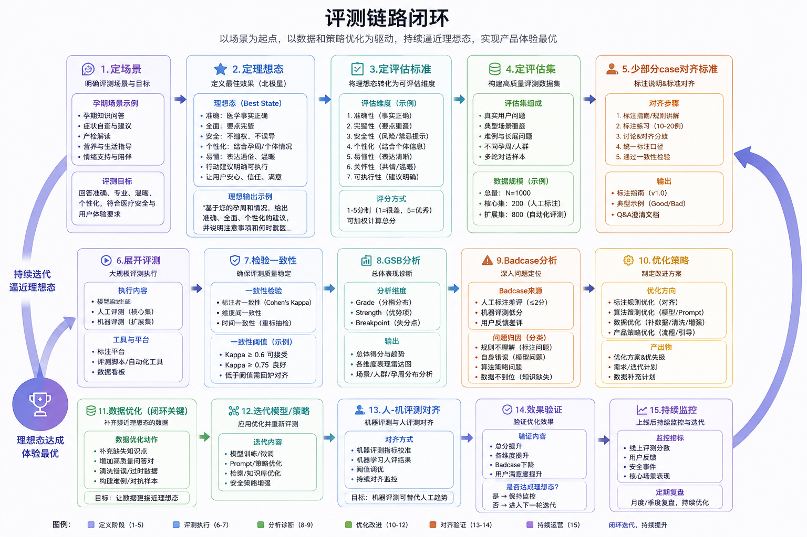
主动管理、记忆机制、谄媚治理——打造安全可靠、持续进化的 AI Agent 底座
To-Do List 存的不是「明天要做什么」，而是「用户身上有哪些还没闭环的事」。 通过质变模式（状态达标触发）、阈值模式（条件触发）和失联唤醒（关怀触发）三种触发机制， 结合 New To-Do 状态导向的永续闭环事项管理，实现从被动响应到主动关怀的升级。
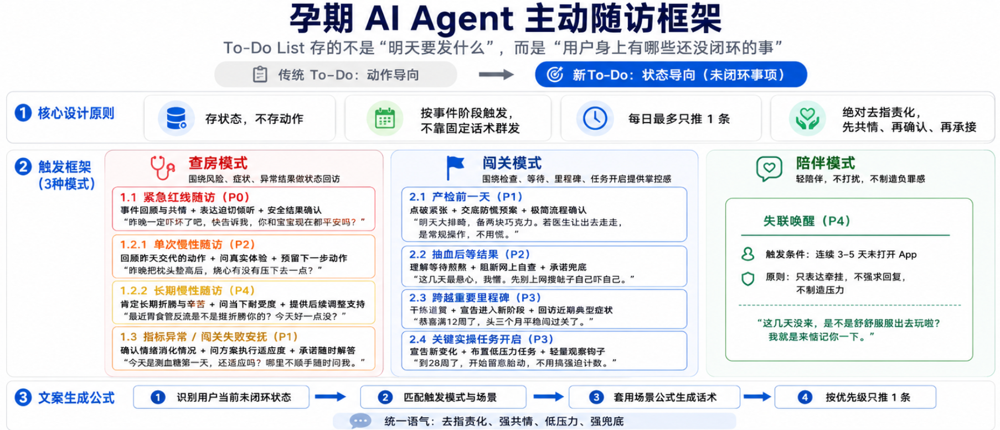
构建短期记忆、长期记忆、情感记忆三层记忆体系，通过 Memory Orchestrator 记忆编排层 实现意图识别、多路召回、相关性与时效性排序、Token 预算裁剪等能力， 并配套记忆属性标签与遗忘/治理机制，让 AI 真正「记住」每一位孕妈。
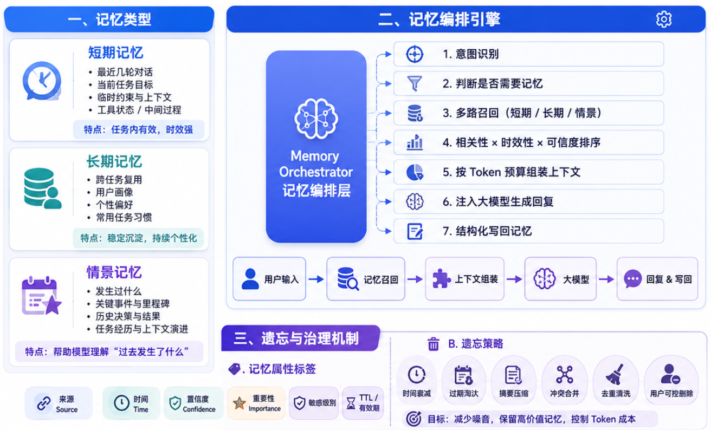
孕期智能体对话边界治理方案。通过「粗筛预警 → 监工 Agent 判断 → 干预降级」三层架构， 识别并治理 Agent 谄媚、越界、合规风险。目标：避免迎合、确保专业、保证安全、建立信赖。 低成本高召回的粗筛 + 高精度复核，只对高风险内容安全检查，兼顾体验与安全。
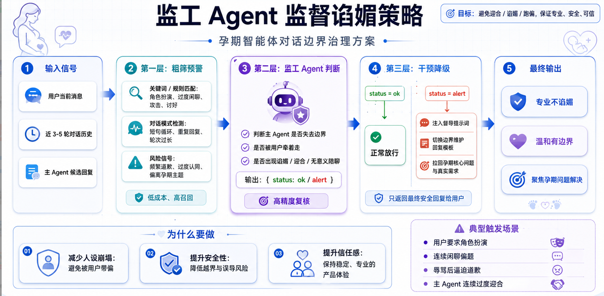